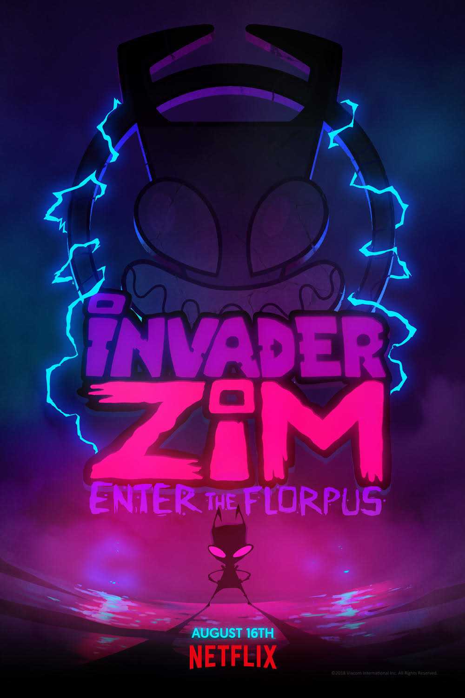
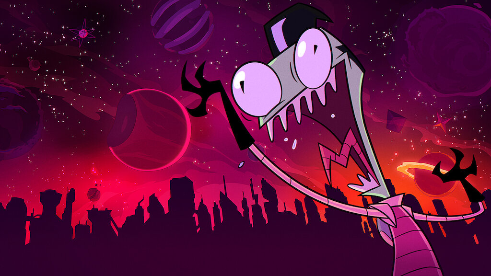
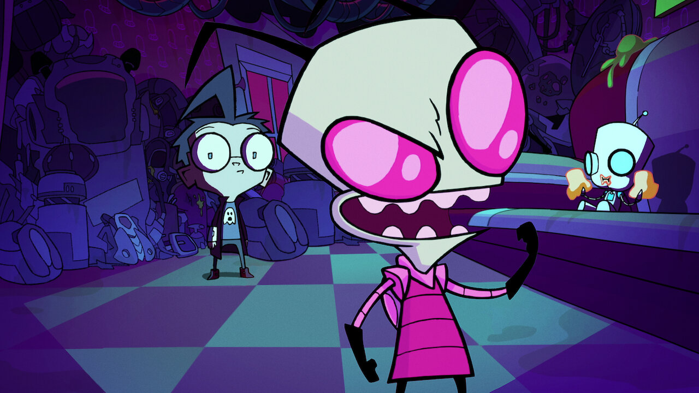

Invader Zim: Enter the Florpus
The Plot
by Soap Banana Toaster * Jun 20, 2024
When alien Irken infiltrator Zim suddenly reappears after a long absence, his now-overweight human nemesis Dib Membrane confronts him. Zim reveals that his disappearance was meant to make Dib too physically unfit to oppose him, allowing Zim to begin Phase Two of his plan. Zim contacts his leaders, the Almighty Tallest, but realizes that he has forgotten what Phase Two entails.
Dib regains his physical fitness with help from his sister Gaz. Their father, Professor Membrane, gives Dib a prototype device called the Membracelet, meant to harness the positive energy of the world's children, but expresses his disappointment in Dib's continued belief in aliens. An incensed Dib goes to confront Zim, but finds him in a state of depression; Zim and his robotic assistant GIR have been unable to remember Phase Two and, furthermore, have realized that the Irken Armada does not plan to invade Earth. Defeated, Zim surrenders to Dib, who decides to present him to the world during his father's Membracelet presentation.
At Professor Membrane's keynote address, Dib allows Zim to modify the Membracelet to hijack the presentation. However, as soon as Zim is free, the lights go out, Membrane disappears, and Zim takes control of the stage in disguise. Dib awakens the next day to find that he and Gaz are imprisoned in their own home by Clembrane, a failed clone of their father, while Zim continues distributing Membracelets around the world. After GIR compels every child on Earth to hold hands while wearing the bracelets, Zim uses Minimoose and the combined energy of the Membracelets to teleport Earth into the Irken Armada's flight path and force the Tallest to visit him. However, the irritated Tallest decide to simply destroy him along with the Earth once they reach it.
The Earth's sudden teleportation opens a "Florpus", a space-time rift capable of consuming the planet and merging it with alternate realities, but Zim ignores the danger and begins preparing for the arrival of the Tallest. Dib and Gaz escape using a spaceship formerly belonging to Zim's Irken rival Tak and free Professor Membrane from intergalactic space prison Moo-Ping 10; Dib expresses his desire for his father to be proud of him, and Membrane tells Dib that he is already proud of him, despite his belief in the supernatural. Dib lands on Earth and fights Zim for control of Minimoose to stop the Florpus, while Membrane, revealed to have robotic prosthetics, helps Dib destroy Zim's robot army. Although the Membranes are able to recover Minimoose after turning Clembrane on Zim, the Irken Armada finally arrives to destroy Earth just as it enters the Florpus. As Earth begins colliding with alternate realities, Membrane finally figures out how to teleport the planet back to its original location, while the Armada flies directly into the Florpus.
In Conclusion
Back on Earth, the Membrane family is reunited, and Zim appears at their window claiming the real goal of Phase Two was stealing a ceramic clown figurine from their living room. Zim contacts the Tallest to report his success, only to see them suffering in an alternate reality. Zim interprets their anguished screams as them being pleased with his work before he is crushed by a falling pug that GIR had launched into space at the film's beginning; GIR launches the pug into space again.